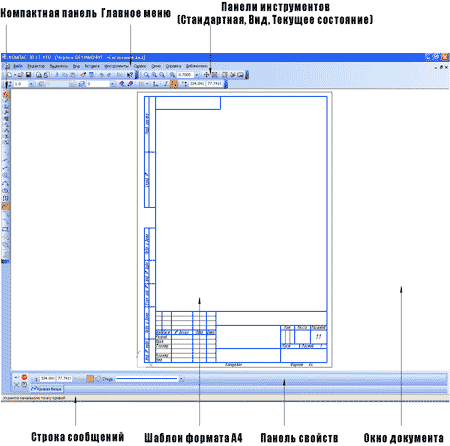

Інтерфейс Компас 3D LT. Панелі та меню
Давайте тепер ознайомимося з головним меню програми Компас на прикладі документа Креслення (Файл-Створити-Креслення). Відкриється головне вікно системи, в якому відображаються наступні елементи:
1) Головне меню
2) Панелі інструментів (Стандартна, Вид, Поточний стан)
3) Компактна панель
4) Рядок повідомлень
5) Панель властивостей
6) Вікно документа
7) Шаблон креслення формату А4 у вікні документа
1) Головне меню (2d, 3d) містить в собі основні меню програми. З його допомогою можна створити новий файл, зберегти, відправити його на друк, налаштувати інтерфейс, створити і відредагувати креслення, підключити бібліотеки і багато іншого.
2) Панель Стандартна - також розташована в верхній частині екрану. Тут продубльовані найбільш часто використовувані команди: Створити документ, Відкрити, Зберегти, Надіслати на друк.
3) Панель Вид - містить команди для керування зображенням. Можна міняти масштаб, наближати, видаляти креслення.
4) Панель Поточний стан - тут розташовані кнопки для управління курсором, його координати. Також тут можна встановити / заборонити прив'язки курсору, включити / вимкнути сітку (як в AutoCAD), режим ортогонального креслення.
5) Панель Компактна (2d, 3d) - найпопулярніша панель у користувача Компаса. Тут є все, що потрібно для створення і редагування креслення: геометричні фігури, розміри, позначення. Панель Компактна складається з панелі перемикання і інструментальних панелей. На малюнку активізована інструментальна панель Геометрія (точки, допоміжні лінії, відрізки, окружності).
6) Панель Властивостей - спочатку її на екрані немає, вона з'являється при створенні будь-якого елементу креслення і служить для управління процесом створення цього елемента. Наприклад, при створенні відрізка, як показано на малюнку, можна задати координати двох його точок, кут, довжину, стиль лінії.
До речі, тут і далі ви можете побачити на малюнках маленькі чорні трикутнички. Вони означають, що крім інформації, що відображається на екрані є ще інші схожі команди. Ми надалі (в основних уроках) будемо описувати не всі команди, а тільки ті, які видно на екрані відразу (вони основні). З рештою постарайтеся розібратися самі або загляньте в Інші матеріали.
В принципі, на цьому знайомство з інтерфейсом можна закінчити.